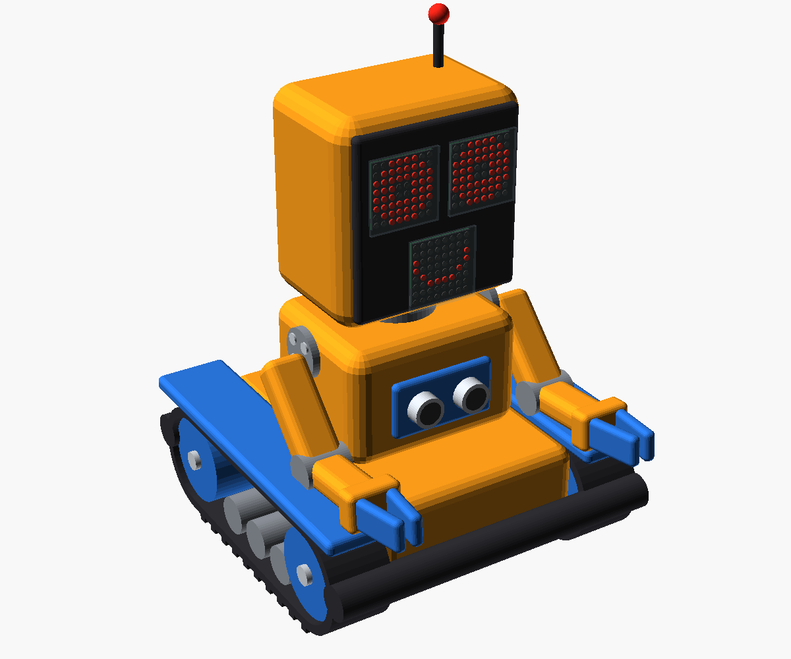
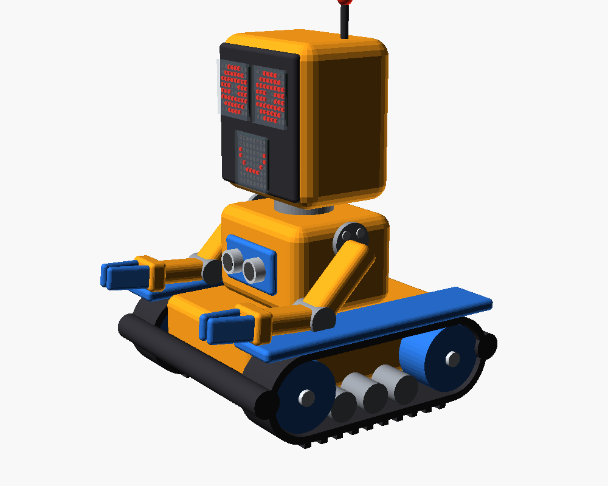

A · Tank
tracks2 arms × 2 jointsturning head

A classic tracked robot with a square head that turns left and right. Both arms have a shoulder and an elbow and end in fixed claws, so it can push, scoop and wave.
- Size
- about 180 × 185 × 265 mm tall (with antenna)
- Drive
- 2 gear motors, TPU tracks with grousers
- Servos
- 5: shoulder + elbow per arm, head pan
- Eyes
- two more 8×8 matrices chained to the mouth
- Sensor
- HC-SR04 in the chest behind a guard
- Climbs over toys and rugs
- Most "robot" looking, the head turn is very expressive
- Printed tracks are the most failure-prone part of all three designs
- Tall, so it is the one most likely to tip on a hard turn
- Longest print and assembly